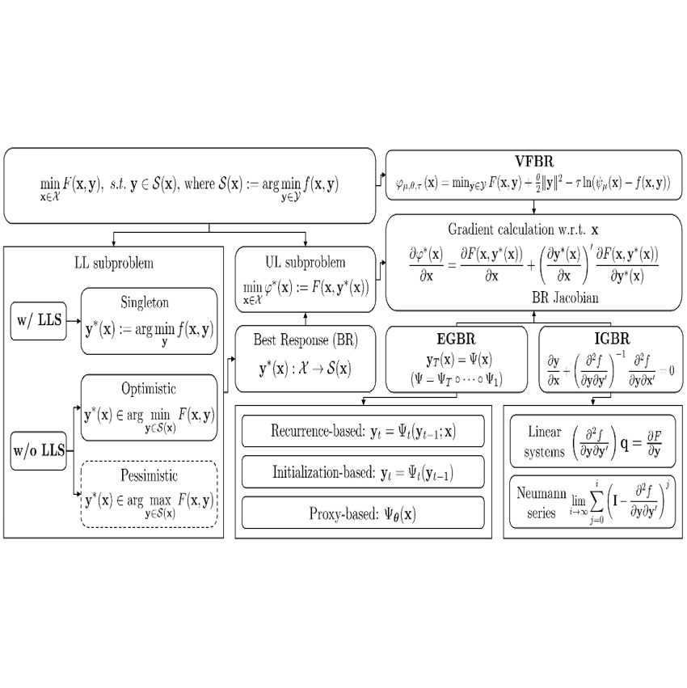
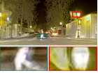
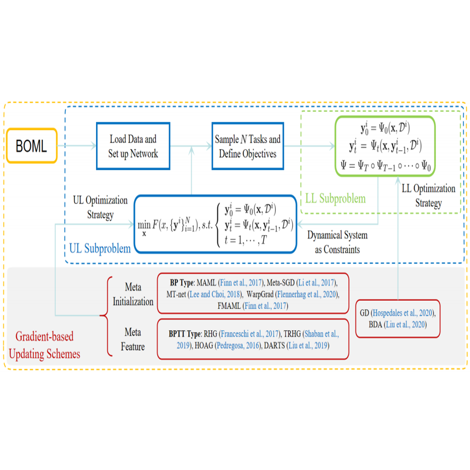
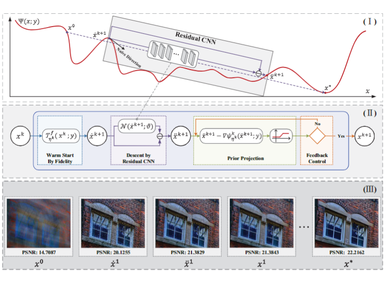
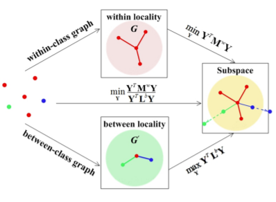
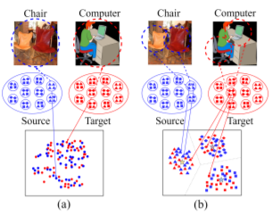

2021 |
|

Investigating Bi-Level Optimization for Learning and Vision from a Unified Perspective: A Survey and Beyond.
Risheng Liu, Jiaxin Gao, Jin Zhang, Deyu Meng, Zhouchen Lin Abstract:
Bi-Level Optimization (BLO) is originated from the area of economic game theory and then introduced into the optimization community. BLO is able to handle problems with a hierarchical structure, involving two levels of optimization tasks, where one task is nested inside the other. In machine learning and computer vision fields, despite the different motivations and mechanisms, a lot of complex problems, such as hyper-parameter optimization, multi-task and meta learning, neural architecture search, adversarial learning and deep reinforcement learning, actually all contain a series of closely related subproblms. In this paper, we first uniformly express these complex learning and vision problems from the perspective of BLO. Then we construct a best-response-based single-level reformulation and establish a unified algorithmic framework to understand and formulate mainstream gradient-based BLO methodologies, covering aspects ranging from fundamental automatic differentiation schemes to various accelerations, simplifications, extensions and their convergence and complexity properties. Last but not least, we discuss the potentials of our unified BLO framework for designing new algorithms and point out some promising directions for future research. Latex Bibtex Citation:
@article{liu2021investigating, |
 Learning Deformable Image Registration from Optimization: Perspective, Modules, Bilevel Training and Beyond.
Risheng Liu, Zi Li, Xin Fan, Chenying Zhao, Hao Huang, Zhongxuan Luo. Abstract:
Conventional deformable registration methods aim at solving an optimization model carefully designed on image pairs and their computational costs are exceptionally high. In contrast, recent deep learning-based approaches can provide fast deformation estimation. These heuristic network architectures are fully data-driven and thus lack explicit geometric constraints which are indispensable to generate plausible deformations, e.g., topology-preserving. Moreover, these learning-based approaches typically pose hyper-parameter learning as a black-box problem and require considerable computational and human effort to perform many training runs. To tackle the aforementioned problems, we propose a new learning-based framework to optimize a diffeomorphic model via multi-scale propagation. Specifically, we introduce a generic optimization model to formulate diffeomorphic registration and develop a series of learnable architectures to obtain propagative updating in the coarse-to-fine feature space. Further, we propose a new bilevel self-tuned training strategy, allowing efficient search of task-specific hyper-parameters. This training strategy increases the flexibility to various types of data while reduces computational and human burdens. We conduct two groups of image registration experiments on 3D volume datasets including image-to-atlas registration on brain MRI data and image-to-image registration on liver CT data. Extensive results demonstrate the state-of-the-art performance of the proposed method with diffeomorphic guarantee and extreme efficiency. We also apply our framework to challenging multi-modal image registration, and investigate how our registration to support the down-streaming tasks for medical image analysis including multi-modal fusion and image segmentation. Latex Bibtex Citation: @article{liu2021learning, |
|
Abstract:
Video deraining is an important issue for outdoor vision systems and has been investigated extensively. However, designing optimal architectures by the aggregating model formation and data distribution is a challenging task for video deraining. In this paper, we develop a model-guided triplelevel optimization framework to deduce network architecture with cooperating optimization and auto-searching mechanism, named Triple-level Model Inferred Cooperating Searching (TMICS), for dealing with various video rain circumstances. In particular, to mitigate the problem that existing methods cannot cover various rain streaks distribution, we first design a hyper-parameter optimization model about task variable and hyper-parameter. Based on the proposed optimization model, we design a collaborative structure for video deraining. This structure includes Dominant Network Architecture (DNA) and Companionate Network Architecture (CNA) that is cooperated by introducing an Attention-based Averaging Scheme (AAS). To better explore inter-frame information from videos, we introduce a macroscopic structure searching scheme that searches from Optical Flow Module (OFM) and Temporal Grouping Module (TGM) to help restore latent frame. In addition, we apply the differentiable neural architecture searching from a compact candidate set of task-specific operations to discover desirable rain streaks removal architectures automatically. Extensive experiments on various datasets demonstrate that our model shows significant improvements in fidelity and temporal consistency over the state-of-the-art works. Latex Bibtex Citation: @ARTICLE{Mu_TIP_2021, |
|
Underexposed Image Correction via Hybrid Priors Navigated Deep Propagation.
Risheng Liu, Long Ma, Jiaao Zhang, Xin Fan, Zhongxuan Luo Abstract:
Enhancing visual qualities for underexposed imagesis an extensively concerned task that plays important roles invarious areas of multimedia and computer vision. Most existingmethods often fail to generate high-quality results with appro-priate luminance and abundant details. To address these issues,we in this work develop a novel framework, integrating bothknowledge from physical principles and implicit distributionsfrom data to solve the underexposed image correction task.More concretely, we propose a new perspective to formulatethis task as an energy-inspired model with advanced hybridpriors. A propagation procedure navigated by the hybrid priorsis well designed for simultaneously propagating the reflectanceand illumination toward desired results. We conduct extensiveexperiments to verify the necessity of integrating both underlyingprinciples (i.e., with knowledge) and distributions (i.e., from data)as navigated deep propagation. Plenty of experimental results ofunderexposed image correction demonstrate that our proposedmethod performs favorably against the state-of-the-art methodson both subjective and objective assessments. Additionally, weexecute the task of face detection to further verify the naturalnessand practical value of underexposed image correction. What'smore, we employ our method to single image haze removal whoseexperimental results further demonstrate its superiorities. Latex Bibtex Citation:
@article{liu2021underexposed, |
|
Abstract:
Enhancing the quality of low-light (LOL) imagesplays a very important role in many image processing andmultimedia applications. In recent years, a variety of deep learn-ing techniques have been developed to address this challengingtask. A typical framework is tosimultaneously estimate theillumination and reflectance, but they disregard the scene-levelcontextual information encapsulated in feature spaces, causingmany unfavorable outcomes, e.g., details loss, color unsatura-tion, and artifacts. To address these issues, we develop a newcontext-sensitive decomposition network (CSDNet) architectureto exploit the scene-level contextual dependencies on spatialscales. More concretely, we build a two-stream estimation mech-anism including reflectance and illumination estimation network.We design a novel context-sensitive decomposition connection tobridge the two-stream mechanism by incorporating the phys-ical principle. The spatially varying illumination guidance isfurther constructed for achieving the edge-aware smoothnessproperty of the illumination component. According to differenttraining patterns, we construct CSDNet (paired supervision) andcontext-sensitive decomposition generative adversarial network(CSDGAN) (unpaired supervision) to fully evaluate our designedarchitecture. We test our method on seven testing benchmarks[including massachusetts institute of technology (MIT)-AdobeFiveK, LOL, ExDark, and naturalness preserved enhancement(NPE)] to conduct plenty of analytical and evaluated experiments.Thanks to our designed context-sensitive decomposition connec-tion, we successfully realized excellent enhanced results (withsufficient details, vivid colors, and few noises), which fully indi-cates our superiority against existing state-of-the-art approaches.Finally, considering the practical needs for high efficiency,we develop a lightweight CSDNet (named LiteCSDNet) by reduc-ing the number of channels. Furthermore, by sharing an encoderfor these two components, we obtain a more lightweight version(SLiteCSDNet for short). SLiteCSDNet just contains 0.0301Mparameters but achieves the almost same performance as CSD-Net.Code is available at https://github.com/KarelZhang/CSDNet-CSDGAN. Latex Bibtex Citation:
@article{ma2021learning, |
|
Learning a Deep Multi-scale Feature Ensemble and an Edge-attention Guidance for Image Fusion.
Jinyuan Liu, Xin Fan, Ji Jiang, Risheng Liu, Zhongxuan Luo Abstract:
Image fusion integrates a series of images acquiredfrom different sensors,e.g., infrared and visible, outputtingan image with richer information than either one. Traditionaland recent deep-based methods have difficulties in preservingprominent structures and recovering vital textural details forpractical applications. In this paper, we propose a deep networkfor infrared and visible image fusion cascading a feature learningmodule with a fusion learning mechanism. Firstly, we applya coarse-to-fine deep architecture to learn multi-scale featuresfor multi-modal images, which enables discovering prominentcommon structures for later fusion operations. The proposedfeature learning module requires no well-aligned image pairs fortraining. Compared with the existing learning-based methods,the proposed feature learning module can ensemble numerousexamples from respective modals for training, increasing theability of feature representation. Secondly, we design an edge-guided attention mechanism upon the multi-scale features toguide the fusion focusing on common structures, thus recoveringdetails while attenuating noise. Moreover, we provide a newaligned infrared and visible image fusion dataset, RealStreet,collected in various practical scenarios for comprehensive eval-uation. Extensive experiments on two benchmarks, TNO andRealStreet, demonstrate the superiority of the proposed methodover the state-of-the-art in terms of both visual inspection andobjective analysis on six evaluation metrics. We also conduct theexperiments on the FLIR and NIR datasets, containing foggyweather and poor light conditions, to verify the generalizationand robustness of the proposed method. Latex Bibtex Citation:
@article{liu2021learning, |
|
Abstract:
Low-light image enhancement plays very important rolesin low-level vision areas. Recent works have built a greatdeal of deep learning models to address this task. Howev-er, these approaches mostly rely on significant architectureengineering and suffer from high computational burden.In this paper, we propose a new method, named Retinex-inspired Unrolling with Architecture Search (RUAS), to con-struct lightweight yet effective enhancement network forlow-light images in real-world scenario. Specifically, build-ing upon Retinex rule, RUAS first establishes models tocharacterize the intrinsic underexposed structure of low-light images and unroll their optimization processes to con-struct our holistic propagation structure. Then by design-ing a cooperative reference-free learning strategy to dis-cover low-light prior architectures from a compact searchspace, RUAS is able to obtain a top-performing image en-hancement network, which is with fast speed and requiresfew computational resources. Extensive experiments veri-fy the superiority of our RUAS framework against recent-ly proposed state-of-the-art methods. The project page isavailable at http://dutmedia.org/RUAS/. Latex Bibtex Citation:
@inproceedings{liu2021retinex, |
|
Bridging the Gap between Low-Light Scenes: Bilevel Learning for Fast Adaptation.
Dian Jin, Long Ma, Risheng Liu*, Xin Fan
Abstract:
Brightening low-light images of diverse scenes is a challenging but widely concerned task in the multimedia community. Convolutional Neural Networks (CNNs) based approaches mostly acquire the enhanced model by learning the data distribution from the specific scenes. However, these works present poor adaptability (even fail) when meeting real-world scenarios that never encountered before. To conquer it, we develop a novel bilevel learning scheme for fast adaptation to bridge the gap between low-light scenes. Concretely, we construct a Retinex-induced encoder-decoder with an adaptive denoising mechanism, aiming at covering more practical cases. Different from existing works that directly learn model parameters by using the massive data, we provide a new hyperparameter optimization perspective to formulate a bilevel learning scheme towards general low-light scenarios. This scheme depicts the latent correspondence (i.e., scene-irrelevant encoder) and the respective characteristic (i.e., scene-specific decoder) among different data distributions. Due to the expensive inner optimization, estimating the hyper-parameter gradient exactly can be prohibitive, we develop an approximate hyper-parameter gradient method by introducing the one-step forward approximation and finite difference approximation to ensure the high-efficient inference. Extensive experiments are conducted to reveal our superiority against other state-of-theart methods. A series of analytical experiments are also executed to verify our effectiveness. Latex Bibtex Citation:
@inproceedings{jin2021bridging, |
|

Abstract:
Multi-modality image fusion refers to generating a complementary image that integrates typical characteristics from source images. In recent years, we have witnessed the remarkable progress of deep learning models for multi-modality fusion. Existing CNN-based approaches strain every nerve to design various architectures for realizing these tasks in an end-to-end manner. However, these handcrafted designs are unable to cope with the high demanding fusion tasks, resulting in blurred targets and lost textural details. To alleviate these issues, in this paper, we propose a novel approach, aiming at searching effective architectures according to various modality principles and fusion mechanisms. Specifically, we construct a hierarchically aggregated fusion architecture to extract and refine fused features from feature-level and object-level fusion perspectives, which is responsible for obtaining complementary target/detail representations. Then by investigating diverse effective practices, we composite a more flexible fusion-specific search space. Motivated by the collaborative principle, we employ a new search strategy with different principled losses and hardware constraints for sufficient discovery of components. As a result, we can obtain a task-specific architecture with fast inference time. Extensive quantitative and qualitative results demonstrate the superiority and versatility of our method against state-of-the-art methods. Latex Bibtex Citation: @inproceedings{liu2021searching, |
 Abstract:
In recent years, Bi-Level Optimization (BLO) techniques have received extensive attentions from both learning and vision communities. A variety of BLO models in complex and practical tasks are of non-convex follower structure in nature (a.k.a., without Lower-Level Convexity, LLC for short). However, this challenging class of BLOs is lack of developments on both efficient solution strategies and solid theoretical guarantees. In this work, we propose a new algorithmic framework, named Initialization Auxiliary and Pessimistic Trajectory Truncated Gradient Method (IAPTT-GM), to partially address the above issues. In particular, by introducing an auxiliary as initialization to guide the optimization dynamics and designing a pessimistic trajectory truncation operation, we construct a reliable approximate version of the original BLO in the absence of LLC hypothesis. Our theoretical investigations establish the convergence of solutions returned by IAPTT-GM towards those of the original BLO without LLC. As an additional bonus, we also theoretically justify the quality of our IAPTT-GM embedded with Nesterov's accelerated dynamics under LLC. The experimental results confirm both the convergence of our algorithm without LLC, and the theoretical findings under LLC. Latex Bibtex Citation:
@article{liu2021towards, |
|

Abstract:
Meta-learning (a.k.a. learning to learn) has recently emerged as a promising paradigm for a variety of applications. There are now many meta-learning methods, each focusing on different modeling aspects of base and meta learners, but all can be (re)formulated as specific bilevel optimization problems. This work presents BOML, a modularized optimization library that unifies several meta-learning algorithms into a common bilevel optimization framework. It provides a hierarchical optimization pipeline together with a variety of iteration modules, which can be used to solve the mainstream categories of meta-learning methods, such as meta-feature-based and meta-initialization-based formulations. The library is written in Python and is available at https://github.com/dut-media-lab/BOML. Latex Bibtex Citation:
@inproceedings{liu2021boml, |
2020A Bilevel Integrated Model with Data-driven Layer Ensemble for Multi-modality Image Fusion.
Risheng Liu, Jinyuan Liu, Zhiying Jiang, Xin Fan, Zhongxuan Luo Abstract:
Image fusion plays a critical role in a variety ofvision and learning applications. Current fusion approaches aredesigned to characterize source images, focusing on a certaintype of fusion task while limited in a wide scenario. More-over, other fusion strategies (i.e., weighted averaging, choose-max) cannot undertake the challenging fusion tasks, whichfurthermore leads to undesirable artifacts facilely emerged intheir fused results. In this paper, we propose a generic imagefusion method with a bilevel optimization paradigm, targetingon multi-modality image fusion tasks. Corresponding alternationoptimization is conducted on certain components decoupled fromsource images. Via adaptive integration weight maps, we areable to get the flexible fusion strategy across multi-modalityimages. We successfully applied it to three types of image fusiontasks, including infrared and visible, computed tomography andmagnetic resonance imaging, and magnetic resonance imagingand single-photon emission computed tomography image fusion.Results highlight the performance and versatility of our approachfrom both quantitative and qualitative aspects. Latex Bibtex Citation:
@article{liu2020bilevel, |
|
A Deep Framework Assembling Principled Modules for CS-MRI: Unrolling Perspective, Convergence Behaviors, and Practical Modeling.
Risheng Liu, Yuxi Zhang, Shichao Cheng, Zhongxuan Luo, Xin Fan Abstract:
Compressed Sensing Magnetic ResonanceImaging (CS-MRI) significantly accelerates MR acquisitionat a sampling rate much lower than the Nyquist crite-rion. A major challenge for CS-MRI lies in solving theseverely ill-posed inverse problem to reconstruct aliasing-free MR images from the sparsek-space data. Conventionalmethods typically optimize an energy function, producingrestoration of high quality, but their iterative numericalsolvers unavoidably bring extremely large time consump-tion. Recent deep techniques provide fast restorationby either learning direct prediction to final reconstruc-tion or plugging learned modules into the energy optimizer.Nevertheless, these data-driven predictors cannot guar-antee the reconstruction following principled constraintsunderlying the domain knowledge so that the reliabilityof their reconstruction process is questionable. In thispaper, we propose a deep framework assembling principledmodules for CS-MRI that fuses learning strategy with theiterative solver of a conventional reconstruction energy.This framework embeds an optimal condition checkingmechanism, fosteringefficientandreliablereconstruction.We also apply the framework to three practical tasks,i.e., complex-valued data reconstruction, parallel imaging andreconstruction with Rician noise. Extensive experiments onboth benchmark and manufacturer-testing images demon-strate that the proposed method reliably converges to theoptimal solution more efficiently and accurately than thestate-of-the-art in various scenarios. Latex Bibtex Citation:
@article{liu2020deep, |
|
Location-aware and Regularization-adaptive Correlation Filters for Robust Visual Tracking.
Risheng Liu, Qianru Chen, Yuansheng Yao, Xin Fan, Zhongxuan Luo Abstract:
Correlation filter (CF) has recently been widely usedfor visual tracking. The estimation of the search window and thefilter-learning strategies is the key component of the CF trackers.Nevertheless, prevalent CF models separately address these issuesin heuristic manners. The commonly used CF models directlyset the estimated location in the previous frame as the searchcenter for the current one. Moreover, these models usually relyon simple and fixed regularization for filter learning, and thus,their performance is compromised by the search window size andoptimization heuristics. To break these limits, this article proposesa location-aware and regularization-adaptive CF (LRCF) forrobust visual tracking. LRCF establishes a novel bilevel opti-mization model to address simultaneously the location-estimationand filter-training problems. We prove that our bilevel for-mulation can successfully obtain a globally converged CF andthe corresponding object location in a collaborative manner.Moreover, based on the LRCF framework, we design two trackersnamed LRCF-S and LRCF-SA and a series of comparisons toprove the flexibility and effectiveness of the LRCF framework.Extensive experiments on different challenging benchmark datasets demonstrate that our LRCF trackers perform favorablyagainst the state-of-the-art methods in practice. Latex Bibtex Citation:
@article{liu2020location, |
|
Investigating Task-driven Latent Feasibility for Nonconvex Image Modeling.
Risheng Liu, Pan Mu, Jian Chen, Xin Fan, Zhongxuan Luo Abstract:
Properly modeling latent image distributions playsan important role in a variety of image-related vision problems.Most exiting approaches aim to formulate this problem asoptimization models (e.g., Maximum A Posterior, MAP) withhandcrafted priors. In recent years, different CNN modules arealso considered as deep priors to regularize the image model-ing process. However, these explicit regularization techniquesrequire deep understandings on the problem and elaboratelymathematical skills. In this work, we provide a new perspective,named Task-driven Latent Feasibility (TLF), to incorporatespecific task information to narrow down the solution spacefor the optimization-based image modeling problem. Thanks tothe flexibility of TLF, both designed and trained constraintscan be embedded into the optimization process. By introducingcontrol mechanisms based on the monotonicity and boundednessconditions, we can also strictly prove the convergence of ourproposed inference process. We demonstrate that different typesof image modeling problems, such as image deblurring and rainstreaks removals, can all be appropriately addressed within ourTLF framework. Extensive experiments also verify the theoreticalresults and show the advantages of our method against existingstate-of-the-art approaches. Latex Bibtex Citation:
@article{liu2020investigating, |
|
Learning Hadamard-Product-Propagation for Image Dehazing and Beyond.
Risheng Liu, Shiqi Li, Jinyuan Liu, Long Ma, Xin Fan, Zhongxuan Luo Abstract:
Image dehazing has evolved into an attractiveresearch field in the computer vision community in the pastfew decades. Previous traditional approaches attempt to designenergy-based objective functions. However, they cannot accu-rately express the intrinsic characteristics of the images, posingweak adaptation ability for real-world complex scenarios. Morerecently, deep learning techniques for image dehazing havematured and become more reliable, showing outstanding perfor-mance. Nevertheless, these methods heavily depend on trainingdata, restricting their application ranges. More importantly, bothtraditional and deep learning approaches all ignore a commonissue, noises/artifacts always appear in the recovery process.To this end, a new Hadamard-Product (HP) model is proposed,which consists of a series of data-driven priors. Based on thismodel, we derive a Learnable Hadamard-Product-Propagation(LHPP) by cascading a series of principle-inspired guidanceand recovery modules. In which, the principle-inspired guidancerelated to transmission is endowed the smoothness property,the other recovery module satisfies the distribution of naturalimages. The Hadamard-product-based propagations is generatedin our developed learnable framework for the task of imagedehazing. In this way, we can eliminate noises/artifacts in therecovery procedure to obtain the ideal outputs. Subsequently,since the generality of our HP model, we successfully extend ourLHPP to settle low-light image enhancement and underwaterimage enhancement problems. A series of analytical experimentsare performed to verify our effectiveness. Plenty of performanceevaluations on three complex tasks fully reveal our superiorityagainst multiple state-of-the-art methods. Latex Bibtex Citation:
@article{liu2020learning, |
|
Dual Neural Networks Coupling Data Regression with Explicit Priors for Monocular 3D Face Reconstruction.
Xin Fan, Shichao Cheng, Kang Huyan, Minjun Hou, Risheng Liu, Zhongxuan Luo Abstract:
We address the challenging issue of reconstructinga 3D face from one single image under various expressionsand illuminations, which is widely applied in multimedia tasks.Methods built upon classical parametric morphable models(3DMMs) gain success on reconstructing the global geometry ofa 3D face, but fail to precisely characterize local facial details.Recently, deep neural networks (DNN) have been applied tothe reconstruction that directly predicts depth maps, showingcompelling performance on detail recovery. Unfortunately, theirreconstruction is prone to structural distortions owing to thelack of explicit prior constraints. In this paper, we propose dualneural networks that optimize one energy coupling data fittingwith local explicit geometric prior. Specifically, we build oneresidual network upon traditional convolution layers in order todirectly predict 3D structures by fitting an input image. Meanwhile,we devise a novel architecture stacking shallow networks torefine 3D clouds with geometric priors given by Markov randomfields (MRFs). Quantitative evaluations demonstrate the superiorperformance of the dual networks over either end-to-end DNNsor parametric models. Comparisons with the state-of-the-art alsoshow competitive reconstruction quality on various conditions. Latex Bibtex Citation:
@article{fan2020dual, |
|
Abstract:
Underwater image enhancement is such an impor-tant low-level vision task with many applications that numerousalgorithms have been proposed in recent years. These algorithmsdeveloped upon various assumptions demonstrate successes fromvarious aspects usingdifferentdata sets anddifferentmetrics.In this work, we setup an undersea image capturing sys-tem, and construct a large-scaleReal-world Underwater ImageEnhancement(RUIE) data set divided into three subsets. Thethree subsets target at three challenging aspects for enhance-ment, i.e., image visibility quality, color casts, and higher-leveldetection/classification, respectively. We conduct extensive andsystematic experiments on RUIE to evaluate the effectiveness andlimitations of various algorithms to enhance visibility and correctcolor casts on images with hierarchical categories of degradation.Moreover, underwater image enhancement in practice usuallyserves as a preprocessing step for mid-level and high-level visiontasks. We thus exploit the object detection performance onenhanced images as a brand newtask-specificevaluation crite-rion. The findings from these evaluations not only confirm whatis commonly believed, but also suggest promising solutions andnew directions for visibility enhancement, color correction, andobject detection on real-world underwater images. The bench-mark is available at: https://github.com/dlut-dimt/Realworld-Underwater-Image-Enhancement-RUIE-Benchmark. Latex Bibtex Citation:
@article{liu2020real, |
|
Knowledge-driven Deep Unrolling for Robust Image Layer Separation.
Risheng Liu, Zhiying Jiang, Xin Fan, Zhongxuan Luo Abstract:
Single-image layer separation targets to decomposethe observed image into two independent components in terms ofdifferent application demands. It is known that many vision andmultimedia applications can be (re)formulated as a separationproblem. Due to the fundamentally ill-posed natural of theseseparations, existing methods are inclined to investigate modelpriors on the separated components elaborately. Nevertheless,it is knotty to optimize the cost function with complicated modelregularizations. Effectiveness is greatly conceded by the settlediteration mechanism, and the adaption cannot be guaranteed dueto the poor data fitting. What is more, for a universal framework,the most taxing point is that one type of visual cue cannot beshared with different tasks. To partly overcome the weaknessesmentioned earlier, we delve into a generic optimization unrollingtechnique to incorporate deep architectures into iterations foradaptive image layer separation. First, we propose a generalenergy model with implicit priors, which is based on maximum aposterior, and employ the extensively accepted alternating direc-tion method of multiplier to determine our elementary iterationmechanism. By unrolling with one general residual architectureprior and one task-specific prior, we attain a straightforward,flexible, and data-dependent image separation framework suc-cessfully. We apply our method to four different tasks, includingsingle-image-rain streak removal, high-dynamic-range tone map-ping, low-light image enhancement, and single-image reflectionremoval. Extensive experiments demonstrate that the proposedmethod is applicable to multipletasks and outperforms the stateof the arts by a large margin qualitatively and quantitatively. Latex Bibtex Citation:
@article{liu2019knowledge, |
|
Abstract:
Bi-level optimization model is able to capture a wide range of complex learning tasks with practical interest. Due to the witnessed efficiency in solving bi-level programs, gradient-based methods have gained popularity in the machine learning community. In this work, we propose a new gradient-based solution scheme, namely, the Bi-level Value-Function-based Interior-point Method (BVFIM). Following the main idea of the log-barrier interior-point scheme, we penalize the regularized value function of the lower level problem into the upper level objective. By further solving a sequence of differentiable unconstrained approximation problems, we consequently derive a sequential programming scheme. The numerical advantage of our scheme relies on the fact that, when gradient methods are applied to solve the approximation problem, we successfully avoid computing any expensive Hessian-vector or Jacobian-vector product. We prove the convergence without requiring any convexity assumption on either the upper level or the lower level objective. Experiments demonstrate the efficiency of the proposed BVFIM on non-convex bi-level problems. Latex Bibtex Citation:
@InProceedings{pmlr-v139-liu21o, |
|
Abstract:
We address the challenging issue of deformable registration that robustly and efficiently builds dense correspondences between images. Traditional approaches upon iterative energy optimization typically invoke expensive computational load. Recent learning-based methods are able to efficiently predict deformation maps by incorporating learnable deep networks. Unfortunately, these deep networks are designated to learn deterministic features for classification tasks, which are not necessarily optimal for registration. In this paper, we propose a novel bi-level optimization model that enables jointly learning deformation maps and features for image registration. The bi-level model takes the energy for deformation computation as the upper-level optimization while formulates the maximum a posterior (MAP) for features as the lower-level optimization. Further, we design learnable deep networks to simultaneously optimize the cooperative bi-level model, yielding robust and efficient registration. These deep networks derived from our bi-level optimization constitute an unsupervised end-to-end framework for learning both features and deformations. Extensive experiments of image-to-atlas and image-to-image deformable registration on 3D brain MR datasets demonstrate that we achieve state-of-the-art performance in terms of accuracy, efficiency, and robustness. Latex Bibtex Citation:
@inproceedings{LiuLZFL20, |
|
A Generic First-Order Algorithmic Framework for Bi-Level Programming Beyond Lower-Level Singleton.
Risheng Liu, Pan Mu, Xiaoming Yuan, Shangzhi Zeng, Jin Zhang Abstract:
In recent years, a variety of gradient-based bi-level optimization methods have been developedfor learning tasks. However, theoretical guaran-tees of these existing approaches often heavily re-ly on the simplification that for each fixed upper-level variable, the lower-level solution must bea singleton (a.k.a., Lower-Level Singleton, LL-S). In this work, by formulating bi-level modelsfrom the optimistic viewpoint and aggregatinghierarchical objective information, we establishBi-level Descent Aggregation (BDA), a flexibleand modularized algorithmic framework for bi-level programming. Theoretically, we derive anew methodology to prove the convergence ofBDA without the LLS condition. Furthermore,we improve the convergence properties of conven-tional first-order bi-level schemes (under the LLSsimplification) based on our proof recipe. Exten-sive experiments justify our theoretical results anddemonstrate the superiority of the proposed BDAfor different tasks, including hyper-parameter op-timization and meta learning. Latex Bibtex Citation:
@inproceedings{liu2020generic, |
2019
Learning converged propagations with deep prior ensemble for image enhancement.
Risheng Liu, Long Ma, Yi Wang, Lei Zhang Abstract:
Enhancing visual qualities of images plays veryimportant roles in various vision and learning applications.In the past few years, both knowledge-driven maximum aposterior (MAP) with prior modelings and fully data-dependentconvolutional neural network (CNN) techniques have been in-vestigated to address specific enhancement tasks. In this paper,by exploiting the advantages of these two types of mechanismswithin a complementary propagation perspective, we proposea unified framework, named deep prior ensemble (DPE), forsolving various image enhancement tasks. Specifically, we firstestablish the basic propagation scheme based on the fundamentalimage modeling cues and then introduce residual CNNs tohelp predicting the propagation direction at each stage. Bydesigning prior projections to perform feedback control, wetheoretically prove that even with experience-inspired CNNs,DPE is definitely converged and the output will always satisfyour fundamental task constraints. The main advantage againstconventional optimization-based MAP approaches is that ourdescent directions are learned from collected training data, thusare much more robust to unwanted local minimums. While,compared with existing CNN type networks, which are often de-signed in heuristic manners without theoretical guarantees, DPEis able to gain advantages from rich task cues investigated on thebases of domain knowledges. Therefore, DPE actually provides ageneric ensemble methodology to integrate both knowledge anddata-based cues for different image enhancement tasks. Moreimportantly, our theoretical investigations verify that the feed-forward propagations of DPE are properly controlled towardour desired solution. Experimental results demonstrate that theproposed DPE outperforms state-of-the-arts on a variety of imageenhancement tasks in terms of both quantitative measure andvisual perception quality. Latex Bibtex Citation:
@article{liu2018learning, |
|
Deep proximal unrolling: Algorithmic framework, convergence analysis and applications.
Risheng Liu, Shichao Cheng, Long Ma, Xin Fan, Zhongxuan Luo Abstract:
Deep learning models have gained great successin many real-world applications. However, most existing net-works are typically designed in heuristic manners, thus theseapproaches lack rigorous mathematical derivations and clearinterpretations. Several recent studies try to build deep modelsby unrolling a particular optimization model that involves taskinformation. Unfortunately, due to the dynamic nature of networkparameters, their resultant deep propagations do not possess thenice convergence property as the original optimization schemedoes. In this work, we develop a generic paradigm to unrollnonconvex optimization for deep model design. Different frommost existing frameworks, which just replace the iterations bynetwork architectures, we prove in theory that the propagationgenerated by our proximally unrolled deep model can globallyconverge to the critical-point of the original optimization model.Moreover, even if the task information is only partially available(e.g., no prior regularization), we can still train convergentdeep propagations. We also extend these theoretical investiga-tions on the more general multi-block models and thus a lotof real-world applications can be successfully handled by theproposed framework. Finally, we conduct experiments on variouslow-level vision tasks (i.e., non-blind deconvolution, dehazing, andlow-light image enhancement) and demonstrate the superiority ofour proposed framework, compared with existing state-of-the-artapproaches. Latex Bibtex Citation:
@article{liu2019deep, |
|
On the Convergence of Learning-based Iterative Methods for Nonconvex Inverse Problems.
Risheng Liu, Shichao Cheng, Yi He, Xin Fan, Zhouchen Lin, Zhongxuan Luo Abstract:
Numerous tasks at the core of statistics, learning and vision areas are specific cases of ill-posed inverse problems. Recently,learning-based (e.g., deep) iterative methods have been empirically shown to be useful for these problems. Nevertheless, integratinglearnable structures into iterations is still a laborious process, which can only be guided by intuitions or empirical insights. Moreover, thereis a lack of rigorous analysis about the convergence behaviors of these reimplemented iterations, and thus the significance of suchmethods is a little bit vague. This paper moves beyond these limits and proposes Flexible Iterative Modularization Algorithm (FIMA), ageneric and provable paradigm for nonconvex inverse problems. Our theoretical analysis reveals that FIMA allows us to generate globallyconvergent trajectories for learning-based iterative methods. Meanwhile, the devised scheduling policies on flexible modules should alsobe beneficial for classical numerical methods in the nonconvex scenario. Extensive experiments on real applications verify the superiorityof FIMA. Latex Bibtex Citation:
@article{liu2019convergence, |
|
Learning Aggregated Transmission Propagation Networks for Haze Removal and Beyond.
Risheng Liu, Xin Fan, Minjun Hou, Zhiying Jiang, Zhongxuan Luo, Lei Zhang Abstract:
Single image dehazing is an important low-levelvision task with many applications. Early researches have inves-tigated different kinds of visual priors to address this problem.However, they may fail when their assumptions are not validon specific images. Recent deep networks also achieve relativelygood performance in this task. But unfortunately, due to thedisappreciation of rich physical rules in hazes, large amounts ofdata are required for their training. More importantly, they maystill fail when there exist completely different haze distributionsin testing images. By considering the collaborations of these twoperspectives, this paper designs a novel residual architecture toaggregate both prior (i.e., domain knowledge) and data (i.e., hazedistribution) information to propagate transmissions for scene ra-diance estimation. We further present a variational energy basedperspective to investigate the intrinsic propagation behavior ofour aggregated deep model. In this way, we actually bridge thegap between prior driven models and data driven networks andleverage advantages but avoid limitations of previous dehazingapproaches. A lightweight learning framework is proposed totrain our propagation network. Finally, by introducing a task-aware image separation formulation with a flexible optimizationscheme, we extend the proposed model for more challengingvision tasks, such as underwater image enhancement and singleimage rain removal. Experiments on both synthetic and real-world images demonstrate the effectiveness and efficiency of theproposed framework. Latex Bibtex Citation:
@article{liu2018learning, |
|

Toward Efficient Image Representation: Sparse Concept Discriminant Matrix Factorization.
Meng Pang, Yiu-ming Cheung, Risheng Liu, Jian Lou, Chuang Lin Abstract:
Abstract¡ª The key ingredients of matrix factorization lie in basic learning and coefficient representation. To enhance the discriminant ability of the learned basis, discriminant graph embedding is usually introduced in the matrix factorization model. However, the existing matrix factorization methods based on graph embedding generally conduct discriminant analysis via a single type of adjacency graph, either similarity-based graphs (e.g., Laplacian eigenmaps graph) or reconstruction-based graphs (e.g., L1-graph), while ignoring the cooperation of the different types of adjacency graphs that can better depict the discriminant structure of original data. To address the above issue, we propose a novel Fisher-like criterion, based on graph embedding, to extract sufficient discriminant information via two different types of adjacency graphs. One graph preserves the reconstruction relationships of neighboring samples in the same category, and the other suppresses the similarity relationships of neighboring samples from different categories. Moreover, we also leverage the sparse coding to promote the sparsity of the coefficients. By virtue of the proposed Fisher-like criterion and sparse coding, a new matrix factorization framework called Sparse concept Discriminant Matrix Factorization (SDMF) is proposed for efficient image representation. Furthermore, we extend the Fisher-like criterion to an unsupervised context, thus yielding an unsupervised version of SDMF. Experimental results on seven benchmark datasets demonstrate the effectiveness and efficiency of the proposed SDMFs on both image classification and clustering tasks. Latex Bibtex Citation:
@article{pang2018toward, |
|
Robust Heterogeneous Discriminative Analysis for Face Recognition with Single Sample per Person.
Meng Pang, Yiu-ming Cheung, Binghui Wang, Risheng Liu Abstract:
Single sample per person face recognition is one of the most challenging problems in face recognition (FR), where only single sample per person (SSPP) is enrolled in the gallery set for training. Although the existing patch-based methods have achieved great success in FR with SSPP, they still have limitations in feature extraction and identification stages when handling complex facial variations. In this work, we propose a new patch-based method called Robust Heterogeneous Discriminative Analysis (RHDA), for FR with SSPP. To enhance the robustness against complex facial variations, we first present a new graphbased Fisher-like criterion, which incorporates two manifold embeddings, to learn heterogeneous discriminative representations of image patches. Specifically, for each patch, the Fisher-like criterion is able to preserve the reconstruction relationship of neighboring patches from the same person, while suppressing the similarities between neighboring patches from the different persons. Then, we introduce two distance metrics, i.e., patch-to-patch distance and patch-to-manifold distance, and develop a fusion strategy to combine the recognition outputs of above two distance metrics via a joint majority voting for identification. Experimental results on various benchmark datasets demonstrate the effectiveness of the proposed method. Latex Bibtex Citation:
@article{pang2019robust, |
|
Semi-supervised Skin Detection by Network with Mutual Guidances.
Yi He, Jiayuan Shi, Chuan Wang, Haibin Huang, Jiaming Liu, Guanbin Li, Risheng Liu, Jue Wang Abstract:
In this paper we present a new data-driven method for robust skin detection from a single human portrait image. Unlike previous methods, we incorporate human body as a weak semantic guidance into this task, considering acquiring large-scale of human labeled skin data is commonly expensive and time-consuming. To be specific, we propose a dual-task neural network for joint detection of skin and body via a semi-supervised learning strategy. The dualtask network contains a shared encoder but two decoders for skin and body separately. For each decoder, its output also serves as a guidance for its counterpart, making both decoders mutually guided. Extensive experiments were conducted to demonstrate the effectiveness of our network with mutual guidance, and experimental results show our network outperforms the state-of-the-art in skin detection. Latex Bibtex Citation:
@inproceedings{wang2019asynchronous, |
|
Task embedded coordinate update: A realizable framework for multivariate non-convex optimization.
Yiyang Wang, Risheng Liu*, Long Ma, Xiaoliang Song. Abstract:
We in this paper propose a realizable framework TECU, whichembeds task-specific strategies into update schemes of coordi-nate descent, for optimizing multivariate non-convex problemswith coupled objective functions. On one hand, TECU is ca-pable of improving algorithm efficiencies through embeddingproductive numerical algorithms, for optimizing univariatesub-problems with nice properties. From the other side, it alsoaugments probabilities to receive desired results, by embed-ding advanced techniques in optimizations of realistic tasks. In-tegrating both numerical algorithms and advanced techniquestogether, TECU is proposed in a unified framework for solvinga class of non-convex problems. Although the task embeddedstrategies bring inaccuracies in sub-problem optimizations, weprovide a realizable criterion to control the errors, meanwhile,to ensure robust performances with rigid theoretical analyses.By respectively embedding ADMM and a residual-type CNNin our algorithm framework, the experimental results verifyboth efficiency and effectiveness of embedding task-orientedstrategies in coordinate descent for solving practical problems. Latex Bibtex Citation:
@inproceedings{wang2019task, |
|
A Theoretically Guaranteed Deep Optimization Framework for Robust Compressive Sensing MRI.
Risheng Liu, Yuxi Zhang, Shichao Cheng, Xin Fan, Zhongxuan Luo Abstract:
Magnetic Resonance Imaging (MRI) is one of the most dy-namic and safe imaging techniques available for clinical ap-plications. However, the rather slow speed of MRI acqui-sitions limits the patient throughput and potential indica-tions. Compressive Sensing (CS) has proven to be an effi-cient technique for accelerating MRI acquisition. The mostwidely used CS-MRI model, founded on the premise of re-constructing an image from an incompletely filled k-space,leads to an ill-posed inverse problem. In the past years, lotsof efforts have been made to efficiently optimize the CS-MRImodel. Inspired by deep learning techniques, some prelimi-nary works have tried to incorporate deep architectures intoCS-MRI process. Unfortunately, the convergence issues (dueto the experience-based networks) and the robustness (i.e.,lack real-world noise modeling) of these deeply trained opti-mization methods are still missing. In this work, we developa new paradigm to integrate designed numerical solvers andthe data-driven architectures for CS-MRI. By introducing anoptimal condition checking mechanism, we can successfullyprove the convergence of our established deep CS-MRI op-timization scheme. Furthermore, we explicitly formulate theRician noise distributions within our framework and obtainan extended CS-MRI network to handle the real-world nosiesin the MRI process. Extensive experimental results verify thatthe proposed paradigm outperforms the existing state-of-the-art techniques both in reconstruction accuracy and efficiencyas well as robustness to noises in real scene. Latex Bibtex Citation:
@inproceedings{liu2019theoretically, |
|

Exploiting Local Feature Patterns for Unsupervised Domain Adaptation.
Jun Wen, Risheng Liu, Nenggan Zheng, Qian Zheng, Zhefeng Gong, Junsong Yuan Abstract:
Unsupervised domain adaptation methods aim to alleviate performance degradation caused by domain-shift by learning domain-invariant representations. Existing deep domain adaptation methods focus on holistic feature alignment by matching source and target holistic feature distributions, without considering local features and their multi-mode statistics. We show that the learned local feature patterns are more generic and transferable and a further local feature distribution matching enables fine-grained feature alignment. In this paper, we present a method for learning domain-invariant local feature patterns and jointly aligning holistic and local feature statistics. Comparisons to the state-of-the-art unsupervised domain adaptation methods on two popular benchmark datasets demonstrate the superiority of our approach and its effectiveness on alleviating negative transfer. Latex Bibtex Citation:
@inproceedings{wen2019exploiting, |
|
Asynchronous Proximal Stochastic Gradient Algorithm for Composition Optimization Problems.
Pengfei Wang, Risheng Liu, Nenggan Zheng, Zhefeng Gong Abstract:
In machine learning research, many emerging applications can be (re)formulated as the composition optimization problem with nonsmooth regularization penalty. To solve this problem, traditional stochastic gradient descent (SGD) algorithm and its variants either have low convergence rate or are computationally expensive. Recently, several stochastic composition gradient algorithms have been proposed, however, these methods are still inefficient and not scalable to large-scale composition optimization problem instances. To address these challenges, we propose an asynchronous parallel algorithm, named Async-ProxSCVR, which effectively combines asynchronous parallel implementation and variance reduction method. We prove that the algorithm admits the fastest convergence rate for both strongly convex and general nonconvex cases. Furthermore, we analyze the query complexity of the proposed algorithm and prove that linear speedup is accessible when we increase the number of processors. Finally, we evaluate our algorithm Async-ProxSCVR on two representative composition optimization problems including value function evaluation in reinforcement learning and sparse mean-variance optimization problem. Experimental results show that the algorithm achieves significant speedups and is much faster than existing compared methods. Latex Bibtex Citation:
@inproceedings{wang2019asynchronous, |
2018 and beforeOnline Low-Rank Representation Learning for Joint Multi-Subspace Recovery and Clustering.
Bo Li, Risheng Liu, Junjie Cao, Jie Zhang, Yukun Lai, and Xiuping Liu |
|
Explicit Shape Regression with Characteristic Number for Facial Landmark Localization.
Xin Fan, Risheng Liu, Zhongxuan Luo, Yuntao Li, and Yuyao Feng |
|
Learning to Diffuse: A New Perspective to Design PDEs for Visual Analysis.
Risheng Liu, Guangyu Zhong, Junjie Cao, Zhouchen Lin, Shiguang Shan, and Zhongxuan Luo |
|
Structure-Constrained Low-Rank Representation.
Kewei Tang, Risheng Liu, Zhixun Su and Jie Zhang |
|
Low-Rank Structure Learning via Nonconvex Heuristic Recovery.
Yue Deng, Qionghai Dai, Risheng Liu, Zengke Zhang, Sanqing Hu |
|
Feature Extraction by Learning Lorentzian Metric Tensor and Its Extensions.
Risheng Liu, Zhouchen Lin, Zhixun Su, Kewei Tang |
|
Proximal Alternating Direction Network: A Globally Converged Deep Unrolling Framework.
Risheng Liu, Xin Fan, Shichao Cheng, Xiangyu Wang, Zhongxuan Luo |
|
Unsupervised Representation Learning with Long-Term Dynamics for Skeleton Based Action Recognition.
Nenggan Zheng, Jun Wen, Risheng Liu, Liangqu Long, Jianhua Dai and Zhefeng Gong |
|
A Bridging Framework for Model Optimization and Deep Propagation.
Risheng Liu, Shichao Cheng, Xiaokun Liu, Long Ma, Xin Fan, Zhongxuan Luo |
|
Learning Collaborative Generation Correction Modules for Blind Image Deblurring and Beyond.
Risheng Liu, Yi He, Shichao Cheng, Xin Fan, and Zhongxuan Luo |
|
Factorization-free On-line Kernel Learning for Unlabeled Chunk Data Streams.
Yi Wang, Nan Xue, Xin Fan, Jiebo Luo, Risheng Liu, Bin Chen, Haojie Li, and Zhongxuan Luo |
|
Toward Designing Convergent Deep Operator Splitting Methods for Task-specific Nonconvex Optimization.
Risheng Liu, Shichao Cheng, Yi He, Xin Fan, and Zhongxuan Luo |
|
Fast Factorization-free Kernel Learning for Unlabeled Chunk Data Streams.
Yi Wang, Nan Xue, Xin Fan, Jiebo Luo, Risheng Liu, Bin Chen, Haojie Li, Zhongxuan Luo |
|
Proximal Alternating Direction Networks: A Globally Converged Deep Unrolling Framework.
Risheng Liu, Xin Fan, Shichao Cheng, Xiangyu Wang and Zhongxuan Luo |
|
Self-reinforced Cascaded Regression for Face Alignment.
Xin Fan, Risheng Liu, Kang Huyan and Zhongxuan Luo |
|
Unsupervised Representation Learning with Long-Term Dynamics for Skeleton Based Action Recognition.
Nenggan Zheng, Jun Wen, Risheng Liu, Liangqu Long, Jianhua Dai and Zhefeng Gong |
|
Deep Location-Specific Tracking.
Lingxiao Yang, Risheng Liu, David Zhang, and Lei Zhang |
|
Linearized Alternating Direction Method with Penalization for Nonconvex and Nonsmooth Optimization.
Yiyang Wang, Risheng Liu, Xiaoliang Song and Zhixun Su |
|
Adaptive Partial Differential Equation Learning for Visual Saliency Detection.
Risheng Liu, Junjie Cao, Zhouchen Lin and Shiguang Shan |
|
Fixed-Rank Representation for Unsupervised Visual Learning.
Risheng Liu, Zhouchen Lin, Fernando De la Torre, Zhixun Su |
|
Learning PDEs for Image Restoration via Optimal Control.
Risheng Liu, Zhouchen Lin, Wei Zhang, Zhixun Su |